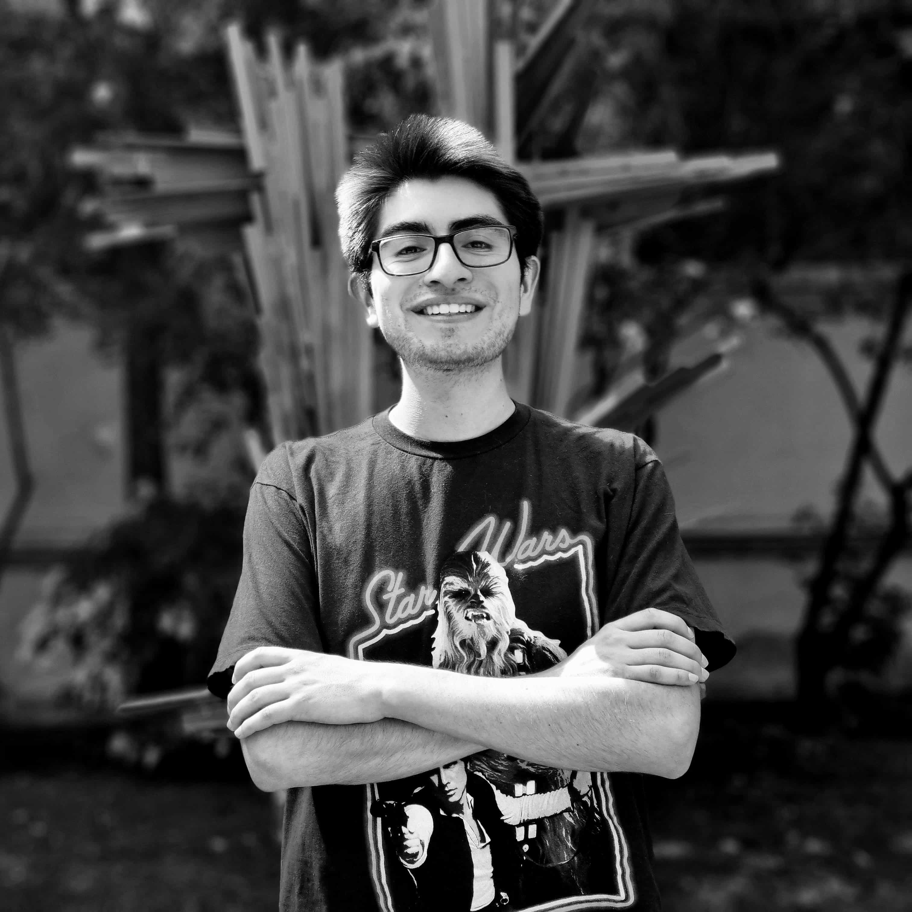

Team members

 Hello we are AstroLab! We're a team composed of astronomers, physicists, and electric engineers working side-by-side to undersand astronomical events from the long-wavelength radio regime to optical wavelengths. Our scientific interests are pulsars/millisecond pulsars, and fast transients, including fast radio bursts (FRBs). We are particularly interested in designing and building dedicated instruments to observe the high-cadence transient regime. Our expertise ranges from radio instrumentation (bulding analog and digital components), data analysis (including big data), and scientific analyses from what we observe. Our team works directly with data/instrument from telescopes such as the Atacamam Pathfinder Experiment (APEX), Atacama Large Millimeter/sub-millimeter Array (ALMA), 100-m Effelsberg, Candian Hydrogen Intensity Mapping Experiment (CHIME), and fast photon counters such as the Italian Quantum Eye (Iqueye). AstroLab collaborates directly with the Millimeter Wave Laboratory (MWL) based at the astronomy department, Universidad de Chile.
Hello we are AstroLab! We're a team composed of astronomers, physicists, and electric engineers working side-by-side to undersand astronomical events from the long-wavelength radio regime to optical wavelengths. Our scientific interests are pulsars/millisecond pulsars, and fast transients, including fast radio bursts (FRBs). We are particularly interested in designing and building dedicated instruments to observe the high-cadence transient regime. Our expertise ranges from radio instrumentation (bulding analog and digital components), data analysis (including big data), and scientific analyses from what we observe. Our team works directly with data/instrument from telescopes such as the Atacamam Pathfinder Experiment (APEX), Atacama Large Millimeter/sub-millimeter Array (ALMA), 100-m Effelsberg, Candian Hydrogen Intensity Mapping Experiment (CHIME), and fast photon counters such as the Italian Quantum Eye (Iqueye). AstroLab collaborates directly with the Millimeter Wave Laboratory (MWL) based at the astronomy department, Universidad de Chile.
 Vicente Aitken. Electrical engineering student at Universidad de Chile. Vicente's engineering thesis project is to assemble and operate a 3-m radio dish at Cerro Calán (co-supervised along side Prof. Finger; MWL). The dish called CHARTS pathfinder telescope (CPT), will be a testbed for prototyping hardware and software for the upcoming CHARTS project. Vicente has already built and installed main hardware of the dish and soon we will perform radio observations. The CPT will be a key piece of the puzzle to start exploring independent correlation algorithms and expand our horizons to very long baseline interferometry (VLBI) experiments in the CHARTS bandpass (300--500 MHz).
Vicente Aitken. Electrical engineering student at Universidad de Chile. Vicente's engineering thesis project is to assemble and operate a 3-m radio dish at Cerro Calán (co-supervised along side Prof. Finger; MWL). The dish called CHARTS pathfinder telescope (CPT), will be a testbed for prototyping hardware and software for the upcoming CHARTS project. Vicente has already built and installed main hardware of the dish and soon we will perform radio observations. The CPT will be a key piece of the puzzle to start exploring independent correlation algorithms and expand our horizons to very long baseline interferometry (VLBI) experiments in the CHARTS bandpass (300--500 MHz).
 Cristóbal Braga. Astronomy student recently graduated from Universidad de Chile and newly admitted to the Master's program in Astrophysics at Pontificia Universidad Católica de Chile. Cristóbal's primary academic pursuits encompass radio astronomy and data science. With a specific focus on FRBs, he is currently working in understanding the methods used to find periodicity for FRBs. In the past he has been engaged in the simulation of FRBs for both intensity and real-time data injections. Additionally, Cristóbal has learned to do targeted searches for repeating FRBs using data obtained from the 100-m Effelsberg telescope to be able to characterize and obtain physical information about them. Also he has developed a pipeline to do offline searches for FRBs. Cristóbal's first research paper titled: FRB 20121102A monitoring: Updated periodicity in the L-band has been accepted to the A&A journal.
Cristóbal Braga. Astronomy student recently graduated from Universidad de Chile and newly admitted to the Master's program in Astrophysics at Pontificia Universidad Católica de Chile. Cristóbal's primary academic pursuits encompass radio astronomy and data science. With a specific focus on FRBs, he is currently working in understanding the methods used to find periodicity for FRBs. In the past he has been engaged in the simulation of FRBs for both intensity and real-time data injections. Additionally, Cristóbal has learned to do targeted searches for repeating FRBs using data obtained from the 100-m Effelsberg telescope to be able to characterize and obtain physical information about them. Also he has developed a pipeline to do offline searches for FRBs. Cristóbal's first research paper titled: FRB 20121102A monitoring: Updated periodicity in the L-band has been accepted to the A&A journal.
 MSc. Gonzalo Burgos. MSc in engineering physics (Universidad de Concepción; UdeC). Gonzalo is an expert in long wavelength instrumentation, radio antennas, and hands-on assembly of interferometers. Gonzalo is the project engineer (logistics, assembly, and student support) for the Canadian-Chilean array for radio transient studies (CHARTS) project. Gonzalo is actively working alongside students and staff members leading the assembly of the CHARTS 256-elements and its FX-correlator. Gonzalo's main interests are the design and architecture of the X-engine and realtime search pipeline for transient events.
MSc. Gonzalo Burgos. MSc in engineering physics (Universidad de Concepción; UdeC). Gonzalo is an expert in long wavelength instrumentation, radio antennas, and hands-on assembly of interferometers. Gonzalo is the project engineer (logistics, assembly, and student support) for the Canadian-Chilean array for radio transient studies (CHARTS) project. Gonzalo is actively working alongside students and staff members leading the assembly of the CHARTS 256-elements and its FX-correlator. Gonzalo's main interests are the design and architecture of the X-engine and realtime search pipeline for transient events.
 Prof. Tomás Cassanelli. Astronomer and tenure-track faculty at the Electrical Engineering Department, Universidad de Chile. Tomás completed his engineering degree at Universidad de La Frontera, MSc degree at the Universität Bonn, and PhD at University of Toronto.
His interests are radio and optical transients such as: FRB repeaters and one-offs, and pulsar-like signals; long wavelength radio instrumentation (including local interferometers and very long baseline interferometry; VLBI) to observe and localize transients and fast photon counters (capable of detecting transient-like signals!) for medium to large apertures.
Prof. Tomás Cassanelli. Astronomer and tenure-track faculty at the Electrical Engineering Department, Universidad de Chile. Tomás completed his engineering degree at Universidad de La Frontera, MSc degree at the Universität Bonn, and PhD at University of Toronto.
His interests are radio and optical transients such as: FRB repeaters and one-offs, and pulsar-like signals; long wavelength radio instrumentation (including local interferometers and very long baseline interferometry; VLBI) to observe and localize transients and fast photon counters (capable of detecting transient-like signals!) for medium to large apertures.
 Juan Pablo Contreras. Electrical engineering student at Universidad de Chile. Juan Pablo's research project focuses on developing techniques to identify microstructures in pulses of repetitive Fast Radio Bursts (FRBs) within high-resolution datasets from the CHIME radio telescope. To address the large volume and complexity of these data, he utilizes Niagara, a supercomputer operated by SciNet at the University of Toronto. This work involves implementing parallel processing techniques (multiprocessing) in Slurm, which are essential for efficiently managing the data and optimizing the analysis algorithms. The project includes designing pipelines for the massive analysis of files and, in the future, collaborations with customized simulations to validate the developed methods.
Juan Pablo Contreras. Electrical engineering student at Universidad de Chile. Juan Pablo's research project focuses on developing techniques to identify microstructures in pulses of repetitive Fast Radio Bursts (FRBs) within high-resolution datasets from the CHIME radio telescope. To address the large volume and complexity of these data, he utilizes Niagara, a supercomputer operated by SciNet at the University of Toronto. This work involves implementing parallel processing techniques (multiprocessing) in Slurm, which are essential for efficiently managing the data and optimizing the analysis algorithms. The project includes designing pipelines for the massive analysis of files and, in the future, collaborations with customized simulations to validate the developed methods.
Joaquín Díaz. Electrical engineering student at Universidad de Chile. Joaquín has worked in the mechanical drive for the 3-m CPT dish, but now has transitioned to higher frequencies. He is currently helping in the development of hardware and sofware for the Italian Quantum Eye (Iqueye) instrument, extrapolating fluxes/magnitudes from known pulsar sources, and optimizing future observations schemes at the nanosecond time resolutions of the Iqueye instrument.
Constanza Espinoza. Astronomy undergraduate student at Universidad de Chile, supervised by Tomás Cassanelli and Marilyn Cruces (Pontificia Universidad Católica; PUC). Connie's research focuses on constraining the behavior of periodic FRBs to better understand them, specifically modeling their activity window through time and frequency (actively collaborating with MPIfR). However, their interests extend beyond this project to include using FRBs as tools for cosmological probes, delving into observational cosmology, and employing radio astronomy for these purposes. Connie is working towards her first scientific publication.
 Sebastián Manosalva. Electrical engineering graduate student at Universidad de Chile. Sebastián's primary interest lies in radio astronomy instrumentation, particularly in its application for FRB detection. Sebastián thesis focuses in a complex radio frequency multiplexing system as part of a larger project aimed at detecting FRBs in Chile, CHARTS. Sebastián has been recently awarded with the MITACS researchlink award, a fully funded 3-month internship at University of Toronto.
 Pascual Marcone. Electrical engineering undergraduate student at Universidad de Chile. Although he is just recently learning the depths of astronomy, he is actively interested in many branches of electrical engineering and astronomy. As for now, he gravitates towards the world of astronomical instruments, focusing on their technical characteristics, both in software and hardware domains. Currently, Pascual is working in preliminary stages towards exploring counterparts for transient events (FRBs and Pulsars), mainly on optical bands with focus on detecting these with fast photon counters (Iqueye instrument).
Pascual Marcone. Electrical engineering undergraduate student at Universidad de Chile. Although he is just recently learning the depths of astronomy, he is actively interested in many branches of electrical engineering and astronomy. As for now, he gravitates towards the world of astronomical instruments, focusing on their technical characteristics, both in software and hardware domains. Currently, Pascual is working in preliminary stages towards exploring counterparts for transient events (FRBs and Pulsars), mainly on optical bands with focus on detecting these with fast photon counters (Iqueye instrument).
 Francisco Muñoz. Francisco is a final-year electrical engineering student at Universidad de Chile, specializing in instrumentation, digital systems and electronics. His thesis project focuses on designing and constructing a specialized ultra low-noise amplifier (ULNA) for the Canadian-Chilean array for radio transient studies (CHARTS). The project involves comprehensive prototype development, including printed circuit board (PCB) design, fabrication, component soldering, and rigorous testing. The ULNA is engineered to amplify and substantially reduce noise in low-intensity signals received by low-frequency antennas (300--500 MHz), with a critical goal of achieving noise temperatures below 30 K to enhance the detection of fast radio bursts (FRBs).
Francisco Muñoz. Francisco is a final-year electrical engineering student at Universidad de Chile, specializing in instrumentation, digital systems and electronics. His thesis project focuses on designing and constructing a specialized ultra low-noise amplifier (ULNA) for the Canadian-Chilean array for radio transient studies (CHARTS). The project involves comprehensive prototype development, including printed circuit board (PCB) design, fabrication, component soldering, and rigorous testing. The ULNA is engineered to amplify and substantially reduce noise in low-intensity signals received by low-frequency antennas (300--500 MHz), with a critical goal of achieving noise temperatures below 30 K to enhance the detection of fast radio bursts (FRBs).
Bruno Pollarolo. Electrical engineering and astronomy student at Universidad de Chile. Bruno is working towards a full spectrometer system for the CHARTS project. Here he is developing code for the new digitizers radio frequency system-on-chip (RFSoC) 4x2 Xilinx AMD boards. Bruno's works centers in developing a custom code to process as many antennas as possible in a single digitizer, a process called de-multiplexing (demodulate several antennas from a single analog-to-digital converter; ADC), to digitize in a wide-bandwidth several antennas of a modest 200 MHz bandwidth. Bruno's project is at the core of CHARTS' digitization. A single digitizer will be capable of converting a totla of 32 antenna analog signals (of the CHARTS 256 elements).